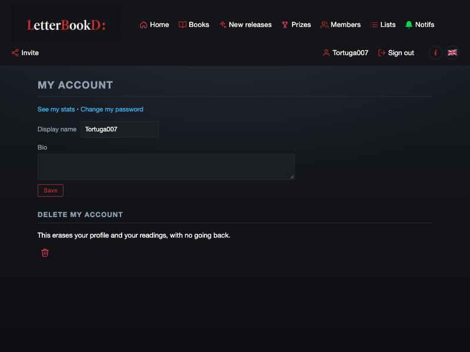

My account
Why it exists: Customise your identity in the club (display name, bio) and manage your security (password). You can also check your reading stats, or permanently delete your account if you want to leave.

Walkthrough
At the top are two quick links: 'View my stats' (your personal stats page) and 'Change my password'. Below them is the profile form: 'Display name' (your public username) and 'Bio' (free text, visible on your profile to members of your clubs). Click 'Save' to apply your changes.
Further down, the 'Delete my account' section has a trash icon that opens a confirmation. Deletion is permanent: your profile, reads, reviews, lists and everything else is erased.
Action chains
Each row describes a trigger in the UI, the modal or form it opens, and the resulting effect.
| Trigger | Modal / Fields | Effect |
|---|---|---|
| 'View my stats' link | — | Opens your stats page: number of books read, average rating, favourite authors, and changes over time. |
| 'Change my password' link | Allauth form: old password, then new password (twice). | Replaces your password. Other open sessions remain valid. |
| 'Save' button (profile form) | Display name (username, required), Bio (free text, optional). | Updates your profile. The changes appear everywhere your username is shown. |
| Trash icon under 'Delete my account' | Confirmation form (separate page). | Permanently deletes your account, reads, reviews, lists and invitations. This action cannot be undone. |